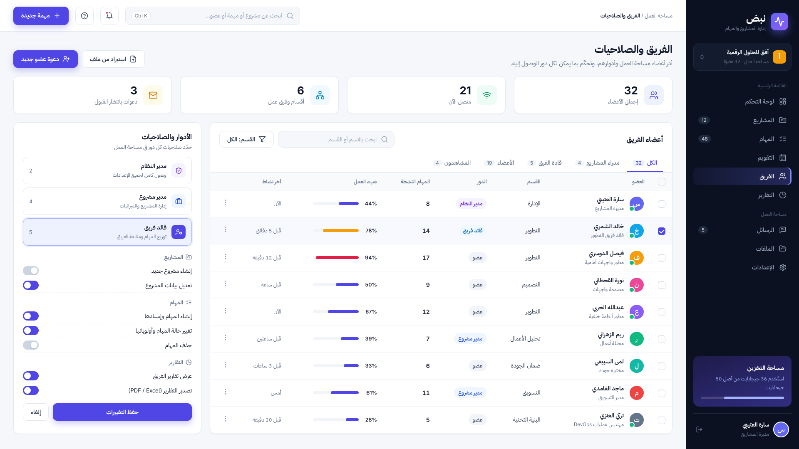
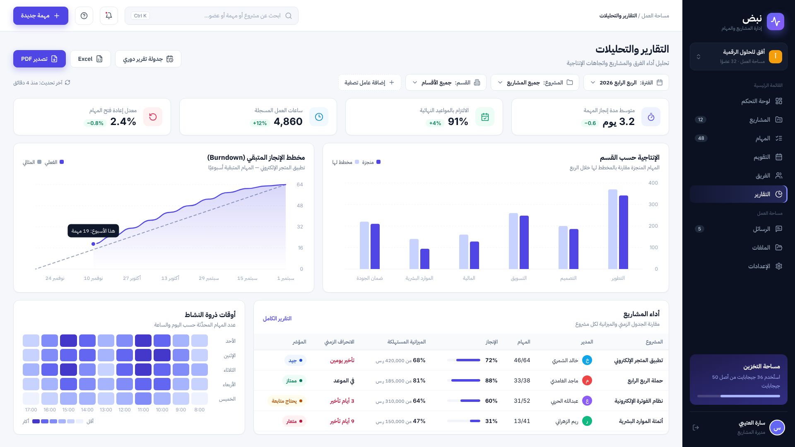

ملف المشروع
نبض
نظام إدارة المشاريع والمهام
منصة سحابية عربية تساعد المؤسسات والفرق على تخطيط المشاريع وتوزيع المهام ومتابعة الإنجاز لحظيًا من مكان واحد، بدل الاعتماد على الجداول المتفرقة والرسائل.
تصميم واجهات UI/UX·تجربة عربية RTL·نظام SaaS
app.nabd.example

01
نظرة عامة على المشروع
نبض
منصة سحابية عربية تساعد المؤسسات والفرق على تخطيط المشاريع وتوزيع المهام ومتابعة الإنجاز لحظيًا من مكان واحد، بدل الاعتماد على الجداول المتفرقة والرسائل.
المشكلة
- تشتت المهام بين البريد ومجموعات المحادثة والجداول
- صعوبة معرفة نسبة الإنجاز الحقيقية لكل مشروع
- عدم وضوح عبء العمل على كل موظف
- تقارير يدوية تستهلك وقت الإدارة
الحل
- مساحة عمل موحدة للمشاريع والمهام والملفات
- مؤشرات أداء ونسب إنجاز تُحدَّث تلقائيًا
- توزيع ذكي للمهام يراعي عبء العمل
- تقارير ورسوم بيانية جاهزة للتصدير
الفئات المستهدفة
- الشركات المتوسطة والكبيرة
- الجهات الحكومية وشبه الحكومية
- وكالات التسويق والبرمجيات
- مكاتب إدارة المشاريع PMO
نبض — نظام إدارة المشاريع والمهامملف المشروعصفحة 2 من 11
02
وظائف النظام
نبض
لوحة تحكم ومؤشراتمؤشرات أداء رئيسية، ومعدل الإنجاز الشهري، وتوزيع حالات المهام في نظرة واحدة.
إدارة المشاريعإنشاء المشاريع وتحديد المدة والميزانية وقائد المشروع والفريق المسؤول.
لوحة المهام Kanbanسحب وإفلات المهام بين الحالات مع الأولوية والمهام الفرعية والمرفقات.
الفريق والصلاحياتأدوار مرنة (مدير نظام، مدير مشروع، قائد فريق، عضو، مشاهد) وصلاحيات دقيقة.
متابعة الإنجازنسب إنجاز لحظية لكل مشروع وعضو، وتنبيهات للمهام المتأخرة والمواعيد القريبة.
التقارير والتحليلاتتقارير الإنتاجية ومخطط الإنجاز المتبقي وأوقات الذروة مع التصدير PDF وExcel.
نبض — نظام إدارة المشاريع والمهامملف المشروعصفحة 3 من 11
03
سير العمل والأدوار
نبض
1
إنشاء المشروعتحديد الأهداف والمدة والفريق 2
تقسيم المهاممهام ومهام فرعية بأولويات 3
الإسنادتوزيع المهام حسب عبء العمل 4
المتابعةتحديث الحالات والتعليقات 5
التقاريرقياس الأداء واتخاذ القرار أدوار المستخدمين
مدير النظامإعدادات مساحة العمل والفوترة وجميع الصلاحيات
مدير المشروعإنشاء المشاريع ومتابعة الميزانية والتقارير
قائد الفريقتوزيع المهام ومراجعة إنجاز الفريق
العضوتنفيذ المهام وتحديث حالتها والتعليق عليها
نبض — نظام إدارة المشاريع والمهامملف المشروعصفحة 4 من 11
04
تصميم الواجهات — لوحة التحكم الرئيسية
نبض
نظرة شاملة على أداء المشاريع والفريق لحظة الدخول إلى النظام.
1أربعة مؤشرات أداء رئيسية مع اتجاه التغير ورسم مصغّر
2رسم بياني لمعدل إنجاز المهام شهريًا مقابل المهام الجديدة
3تقدم المشاريع وعبء العمل والمواعيد النهائية القريبة
app.nabd.example
نبض — نظام إدارة المشاريع والمهامملف المشروعصفحة 5 من 11
05
تصميم الواجهات — لوحة مهام المشروع (Kanban)
نبض
إدارة مهام مشروع «تطبيق المتجر الإلكتروني» وتوزيعها على الفريق.
1أعمدة حسب حالة المهمة مع السحب والإفلات
2بطاقات تعرض الأولوية والمسؤول والمهام الفرعية والموعد
3ترويسة المشروع: نسبة الإنجاز والأيام المتبقية والأعضاء
app.nabd.example

نبض — نظام إدارة المشاريع والمهامملف المشروعصفحة 6 من 11
06
تصميم الواجهات — الفريق والصلاحيات
نبض
إدارة أعضاء مساحة العمل وأدوارهم وصلاحيات كل دور.
1جدول الأعضاء مع القسم والدور والمهام النشطة
2مؤشر عبء العمل بألوان تحذيرية عند الضغط الزائد
3لوحة صلاحيات تفصيلية لكل دور بمفاتيح تفعيل
app.nabd.example

نبض — نظام إدارة المشاريع والمهامملف المشروعصفحة 7 من 11
07
تصميم الواجهات — التقارير والتحليلات
نبض
تحليل الإنتاجية والالتزام بالمواعيد لدعم قرارات الإدارة.
1الإنتاجية حسب القسم مقارنة بالمخطط
2مخطط الإنجاز المتبقي (Burndown) للمشروع
3جدول أداء المشاريع وخريطة حرارية لأوقات النشاط
app.nabd.example

نبض — نظام إدارة المشاريع والمهامملف المشروعصفحة 8 من 11
08
الهوية البصرية ونظام التصميم
نبض
لوحة الألوان
النيلي الأساسي#4F46E5
البنفسجي#7C3AED
كحلي القائمة#0B1120
سماوي البيانات#0EA5E9
كهرماني التنبيه#F59E0B
أحمر التأخير#E11D48
الخط: IBM Plex Sans Arabic
أ ب ت ث ج ح
خط عربي حديث واضح على الشاشات بأوزان من 300 إلى 700، مع خط Inter للأرقام والجداول.
عنوان رئيسيعنوان فرعينص أساسي
مبادئ التصميم
- تصميم عربي كامل من اليمين إلى اليسار (RTL) بما فيه الرسوم البيانية والتقويم
- شبكة متناسقة وزوايا دائرية ومساحات بيضاء مريحة
- ألوان حالات ثابتة مع نص وأيقونة، فلا يُعتمد على اللون وحده
- أيقونات خطية موحدة وبطاقات بظلال خفيفة
نبض — نظام إدارة المشاريع والمهامملف المشروعصفحة 9 من 11
09
البنية التقنية
نبض
الواجهة الأماميةReact.js / Next.jsTypeScriptTailwind CSS
الخدمات الخلفيةNode.js (NestJS)LaravelREST APIWebSockets
قاعدة البياناتPostgreSQLRedisتخزين مؤقت وإشعارات لحظية
البنية والنشرDockerCI/CDتخزين سحابي للملفات
الواجهاتمتصفح الويب
واجهة برمجية APIمصادقة · صلاحيات · منطق العمل
قاعدة البياناتبيانات منظمة ومؤمنة
الإشعارات والتكاملاتخدمات خارجية
الكيانات الرئيسية في قاعدة البيانات
المؤسساتالمستخدمونالأدوار والصلاحياتالمشاريعالمهام والمهام الفرعيةالتعليقات والمرفقاتسجل النشاطالإشعارات
التكاملات
البريد الإلكترونيSlack / Microsoft TeamsGoogle Calendarتسجيل دخول موحد SSO نبض — نظام إدارة المشاريع والمهامملف المشروعصفحة 10 من 11
نبضنظام إدارة المشاريع والمهام
منصة عربية متكاملة بتجربة استخدام واضحة، وواجهات مصممة بعناية لكل دور في النظام، وهوية بصرية موحدة في جميع الشاشات.
لوحة مؤشرات الأداءلوحة مهام Kanbanالفريق والصلاحياتتقارير تفاعلية